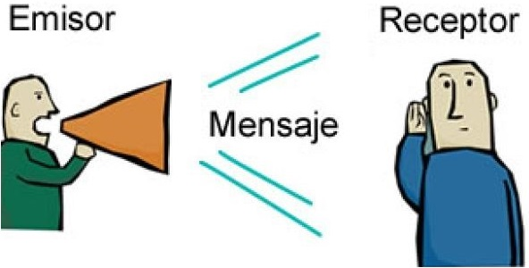

Receptor
Es un dispositivo electrónico que recibe y descifra señales de datos que se transmiten a través de una red. Su función es interpretar la información codificada en la señal y convertirla en un formato usable para el dispositivo al que está conectado.
